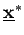
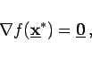

Inhalt Index DeskTop Bronstein

 Optimierung Nichtlineare Optimierung Problemstellung und theoretische Grundlagen Optimalitätsbedingungen
Optimierung Nichtlineare Optimierung Problemstellung und theoretische Grundlagen Optimalitätsbedingungen


Ist f differenzierbar und  ein lokaler Minimalpunkt, dann gilt
Insbsondere gilt
|  | (18.36b) |
falls im Inneren von M liegt.